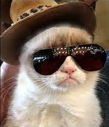
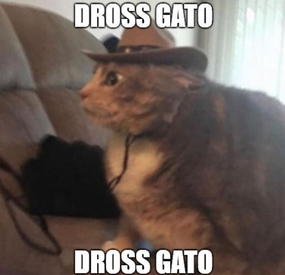
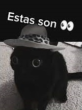
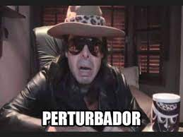

En sus inicios en YouTube, Revilla realizó reseñas de videojuegos y gameplays.
Estos vídeos se caracterizaban por su humor negro, que venían acompañados de videojuegos
con temáticas de terror o incluso de serie B.

Su primera novela, Luna de Plutón, fue lanzada por Grupo Planeta en España y
Latinoamérica. El libro apareció en la lista de los diez libros más vendidos de Argentina.
Su segundo libro, El festival de la blasfemia, fue publicado en 2016.


En esta nueva etapa, su contenido insignia fueron los top 7, y fue tanto el éxito
de sus tops que ayudó a popularizarlos en la comunidad hispana. Incluso, su estética y
forma de narrar sería de gran influencia.